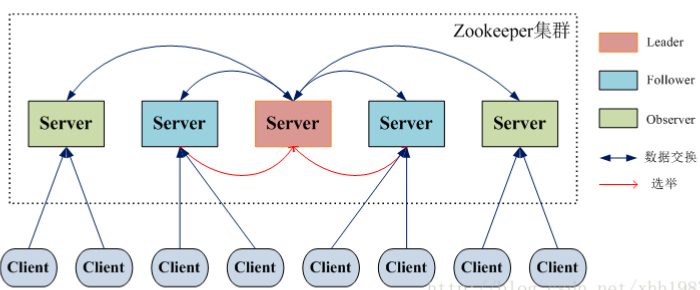

原文连接:https://www.cnblogs.com/jalja/p/11441174.html
一、zookeeper 是什么
Zookeeper是一个分布式协调服务，可用于服务发现，分布式锁，分布式领导选举，配置管理等。这一切的基础，都是Zookeeper提供了一个类似于Linux文件系统的树形结构（可认为是轻量级的内存文件系统，但只适合存少量信息，完全不适合存储大量文件或者大文件），同时提供了对于每个节点的监控与通知机制。既然是一个文件系统，就不得不提Zookeeper是如何保证数据的一致性的。
二、zookeeper 集群架构

Zookeeper集群是一个基于主从复制的高可用集群，通常 Master服务器作为主服务器提供写服务，其他的 Slave 服务器通过异步复制的方式获取 Master 服务器最新的数据，并提供读服务，在 ZooKeeper 中没有选择传统的 Master/Slave 概念，而是引入了Leader、Follower 和 Observer 三种角色，每个角色承担如下：
- Leader 一个Zookeeper集群同一时间只会有一个实际工作的Leader，它会发起并维护与各Follwer及Observer间的心跳。所有的写操作必须要通过Leader完成再由Leader将写操作广播给其它服务器。
- Follower 一个Zookeeper集群可能同时存在多个Follower，它会响应Leader的心跳。Follower可直接处理并返回客户端的读请求，同时会将写请求转发给Leader处理，并且负责在Leader处理写请求时，对请求进行投票（“过半写成功”策略）。
- Observer 角色与Follower类似，但是无投票权。
在集群中zookeeper是如何保证master与slave数据一致性？
为了保证写操作的一致性与可用性，Zookeeper专门设计了一种名为原子广播（ZAB）的支持崩溃恢复的一致性协议。基于该协议，Zookeeper实现了一种主从模式的系统架构来保持集群中各个副本之间的数据一致性。
写数据时保证一致性：Zookeeper 客户端会随机连接到 Zookeeper 集群的一个节点，如果是读请求，就直接从当前节点中读取数据；如果是写请求且当前节点不是leader，那么节点就会向 leader 提交事务，leader 会广播事务，只要有超过半数节点写入成功，该写请求就会被提交（类 2PC 协议）。
服务器运行时期的Leader选举（当leader当机后如何选主）？
zookeeper 在集群模式下，leader宕机也不会影响继续提供服务，但是leader宕机在从新选主过程时无法对外提供服务，会有一个短暂的停顿过程（这里就是与eureka的区别）。
- 集群已存在leader时，要加入一台服务器：对于集群中已经存在Leader而言，此种情况一般都是某台机器启动得较晚，在其启动之前，集群已经在正常工作，对这种情况，该机器试图去选举Leader时，会被告知当前服务器的Leader信息，对于该机器而言，仅仅需要和Leader机器建立起连接，并进行状态同步即可。
- 集群存在leader宕机需要重新选举leader：例如server3 宕机了。则剩余的 每个Server发出一个投票。Server1和Server2都会将自己作为Leader服务器来进行投票，每次投票会包含所推举的服务器的myid和ZXID，使用(myid, ZXID)来表示，此时Server1的投票为(1, 0)，Server2的投票为(2, 0)，然后各自将这个投票发给集群中其他机器。当新的leader选择出来以后，第二步就是数据同步保证所有的节点与leader数据一致。
处理投票。针对每一个投票，服务器都需要将别人的投票和自己的投票进行PK，PK规则如下
· 优先检查ZXID。ZXID比较大的服务器优先作为Leader。
· 如果ZXID相同，那么就比较myid。myid较大的服务器作为Leader服务器。
为什么最好使用奇数台服务器构成 ZooKeeper 集群？
zookeeper有这样一个特性：集群中只要有过半的机器是正常工作的，那么整个集群对外就是可用的。也就是说如果有2个zookeeper，那么只要有1个死了zookeeper就不能用了，因为1没有过半，所以2个zookeeper的死亡容忍度为0；同理，要是有3个zookeeper，一个死了，还剩下2个正常的，过半了（2>3/2），所以3个zookeeper的容忍度为1。如果是4台zookeeper 如果挂掉2台， 还剩下2台 （2 不大于 4/2），显然不过半所以集群还是不可用，4台的容忍度还是1。因此不是 不能部署偶数台，而是偶数台对于高可用作用不大，浪费服务器。
三、ZooKeeper 的一些重要概念
ZooKeeper 将数据保存在内存中，这也就保证了 高吞吐量和低延迟（但是内存限制了能够存储的容量不太大，此限制也是保持znode中存储的数据量较小的进一步原因）。
ZooKeeper 是高性能的。 在“读”多于“写”的应用程序中尤其地高性能，因为“写”会导致所有的服务器间同步状态。（“读”多于“写”是协调服务的典型场景。）
会话（Session）
Session 指的是 ZooKeeper 服务器与客户端会话。在 ZooKeeper 中，一个客户端连接是指客户端和服务器之间的一个 TCP 长连接。客户端启动的时候，首先会与服务器建立一个 TCP 连接，从第一次连接建立开始，客户端会话的生命周期也开始了。通过这个连接，客户端能够通过心跳检测与服务器保持有效的会话，也能够向Zookeeper服务器发送请求并接受响应，同时还能够通过该连接接收来自服务器的Watch事件通知。 Session的sessionTimeout值用来设置一个客户端会话的超时时间。当由于服务器压力太大、网络故障或是客户端主动断开连接等各种原因导致客户端连接断开时，只要在sessionTimeout规定的时间内能够重新连接上集群中任意一台服务器，那么之前创建的会话仍然有效。
在为客户端创建会话之前，服务端首先会为每个客户端都分配一个sessionID。由于 sessionID 是 Zookeeper 会话的一个重要标识，许多与会话相关的运行机制都是基于这个 sessionID 的，因此，无论是哪台服务器为客户端分配的 sessionID，都务必保证全局唯一。
Watcher
Watcher（事件监听器），是Zookeeper中的一个很重要的特性。Zookeeper允许用户在指定节点上注册一些Watcher，并且在一些特定事件触发的时候，ZooKeeper服务端会将事件通知到感兴趣的客户端上去，该机制是Zookeeper实现分布式协调服务的重要特性。
ACL
Zookeeper采用ACL（AccessControlLists）策略来进行权限控制，类似于 UNIX 文件系统的权限控制。Zookeeper 定义了如下5种权限
四、zookeeper 的数据结构
ZooKeeper 允许分布式进程通过共享的层次结构命名空间进行相互协调，这与标准文件系统类似。 名称空间由 ZooKeeper 中的数据寄存器组成 - 称为znode，这些类似于文件和目录。 与为存储设计的典型文件系统不同，ZooKeeper数据保存在内存中，这意味着ZooKeeper可以实现高吞吐量和低延迟。

1、PERSISTENT--持久化目录节点 客户端与zookeeper断开连接后，该节点依旧存在
2、PERSISTENT_SEQUENTIAL-持久化顺序编号目录节点 客户端与zookeeper断开连接后，该节点依旧存在，只是Zookeeper给该节点名称进行顺序编号
3、EPHEMERAL-临时目录节点 客户端与zookeeper断开连接后，该节点被删除
4、EPHEMERAL_SEQUENTIAL-临时顺序编号目录节点 客户端与zookeeper断开连接后，该节点被删除，只是Zookeeper给该节点名称进行顺序编号
五、zookeeper的作用
1、命名服务
在zookeeper的文件系统里创建一个目录，即有唯一的path,在我们使用tborg无法确定上游程序的部署机器时即可与下游程序约定好path,通过path即能互相探索发现。
2、配置管理
程序总是需要配置的，如果程序分散部署在多台机器上，要逐个改变配置就变得困难。好吧，现在把这些配置全部放到zookeeper上去，保存在 Zookeeper 的某个目录节点中，然后所有相关应用程序对这个目录节点进行监听，一旦配置信息发生变化，每个应用程序就会收到 Zookeeper 的通知，然后从 Zookeeper 获取新的配置信息应用到系统中就好。
3、集群管理
所谓集群管理无在乎两点：是否有机器退出和加入、选举master。
第一点，所有机器约定在父目录GroupMembers下创建临时目录节点，然后监听父目录节点的子节点变化消息。一旦有机器挂掉，该机器与 zookeeper的连接断开，其所创建的临时目录节点被删除，所有其他机器都收到通知：某个兄弟目录被删除，于是，所有人都知道他掉线了。新机器加入 也是类似，所有机器收到通知：新兄弟目录加入。
对于第二点，我们稍微改变一下，所有机器创建临时顺序编号目录节点，每次选取编号最小的机器作为master就好。
4、分布式锁
有了zookeeper的一致性文件系统，锁的问题变得容易。锁服务可以分为两类，一个是保持独占，另一个是控制时序。
对于第一类，我们将zookeeper上的一个znode看作是一把锁，通过createznode的方式来实现。所有客户端都去创建 /distribute_lock 节点，最终成功创建的那个客户端也即拥有了这把锁。用完删除掉自己创建的distribute_lock 节点就释放出锁。
对于第二类， /distribute_lock 已经预先存在，所有客户端在它下面创建临时顺序编号目录节点，和选master一样，编号最小的获得锁，用完删除，依次方便。